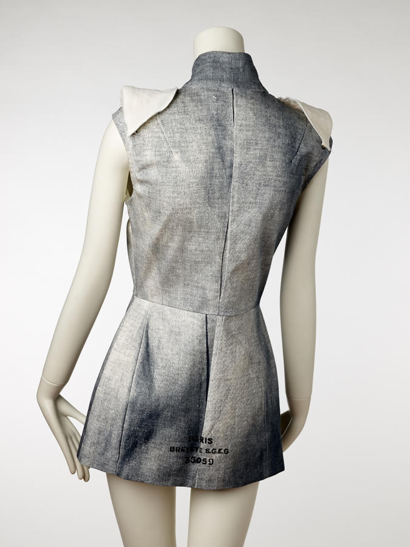

brands · 1988
Maison Margiela: the house that refused to be seen
The most influential fashion house of the last forty years is also the one that refused to be seen.
probable

Maison Martin Margiela was founded in Paris in 1988 by the Belgian designer Martin Margiela and Jenny Meirens. It arrived with a set of refusals: no portrait of the designer, no logo, no seasonal narrative, no bow at the end of the show. The label carried four white stitches holding a white rectangle — a mark visible only to the person wearing the garment.
The house organised its output in numbers rather than names, sorting collections and lines by a numeric code, so that a category could be treated as a category rather than as a campaign. The Artisanal line, its most radical, was made from found and vintage garments re-cut into new pieces. The tabi boot — a split-toe shoe derived from Japanese work socks — became the house's most recognisable object after being introduced in the late 1980s.
The reasons behind the anonymity are worth taking seriously, because they are not mystique for its own sake. Margiela's training was with Jean Paul Gaultier, where the designer was already a public figure; the new house chose the opposite. If the clothes were the only evidence, then the clothes had to do the talking. A collection could be about a sleeve, a lining, a reused glove — not about a personality.
That decision has an afterlife. In an industry now built on personal brands, Margiela remains the proof that anonymity can be a creative instrument rather than a marketing handicap: the garment survives, the author recedes, and the work becomes collectible precisely because it was never sold as a portrait.
The archive market reflects it. Early Margiela is scarce, and pieces circulate between collectors with a level of documentation that fashion rarely attracts — not because of celebrity, but because the objects were made in small numbers and were never designed to be recognised at a distance.
For someone starting in fashion, Margiela is the most useful first case because it separates the two things beginners tend to fuse: the clothes and the person. Study the garments first. The anonymity is not a gimmick to copy; it is a working method that forces attention onto construction.

Sources
- House history (secondary references)
- Museum/commercial object records
- Commons CC0 object photographs (1997, 1999)